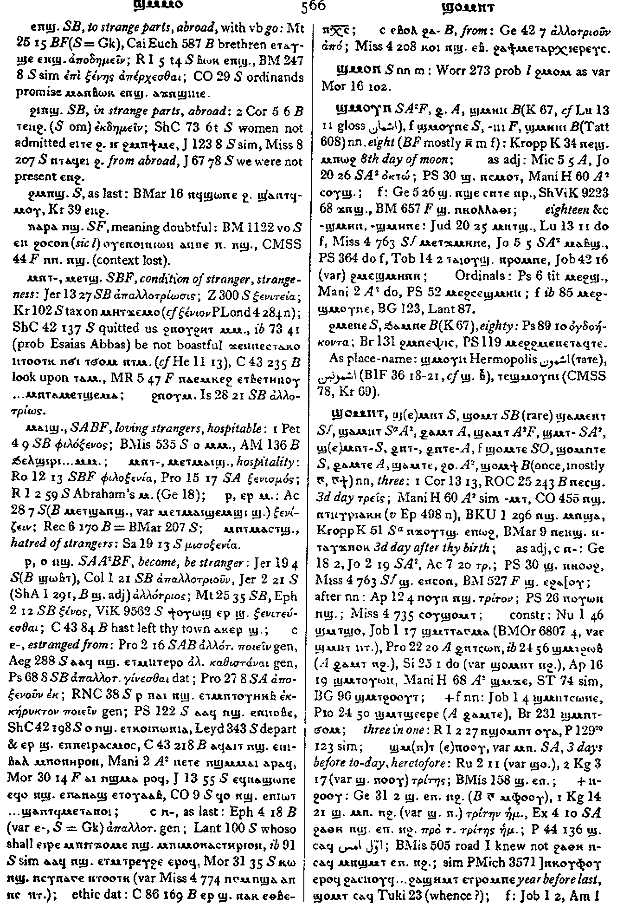

(numeral)
three [τρεισ]
thirteen
thirteen

(S)
ϣⲟⲙⲛⲧ,
ϣ(ⲉ)ⲙⲛⲧ
(S, B) ϣⲟⲙⲧ
(Sf) ϣⲁⲙⲉⲛⲧ
(Sa, sA) ϣⲁⲙⲛⲧ
(A) ⳉⲁⲙⲧ
(sA, F) ϣⲁⲙⲧ
(S, sA) ϣⲙⲧ-
(S) ϣ(ⲉ)ⲙⲛⲧ-
(A) ⳉⲛⲧ-, ⳉⲛⲧⲉ-
(S, O) female: ϣⲟⲙⲧⲉ
(S) female: ϣⲟⲙⲛⲧⲉ
(A) female: ⳉⲁⲙⲧⲉ
(sA) female: ϣⲁⲙⲧⲉ, ϩⲟⲙⲧⲉ
(B) female: ϣⲟⲙϯ
(S, B) ϣⲟⲙⲧ
(Sf) ϣⲁⲙⲉⲛⲧ
(Sa, sA) ϣⲁⲙⲛⲧ
(A) ⳉⲁⲙⲧ
(sA, F) ϣⲁⲙⲧ
(S, sA) ϣⲙⲧ-
(S) ϣ(ⲉ)ⲙⲛⲧ-
(A) ⳉⲛⲧ-, ⳉⲛⲧⲉ-
(S, O) female: ϣⲟⲙⲧⲉ
(S) female: ϣⲟⲙⲛⲧⲉ
(A) female: ⳉⲁⲙⲧⲉ
(sA) female: ϣⲁⲙⲧⲉ, ϩⲟⲙⲧⲉ
(B) female: ϣⲟⲙϯ
| (S, A) ϣⲙⲧ ⲡⲟⲟⲩ, ϣⲙⲧ ⲉⲡⲟⲟⲩ, ϣⲙⲛⲧ ⲡⲟⲟⲩ, ϣⲙⲛⲧ ⲉⲡⲟⲟⲩ | 3 days before to-day, heretofore2992 | Crum: 566b | |||||||
| ⲙⲡϣ. | three together, all three2993 | Crum: 567a | |||||||
See also:
| view | (S) ⲟⲩⲁ (Sf, A, sA, F, O) ⲟⲩⲉ (sA, F) ⲟⲩⲉⲉ, ⲟⲩⲉⲓ (sA, F) ⲟⲩⲉⲉⲓ (B, O) ⲟⲩⲁⲓ (F) ⲟⲩⲁⲓⲉⲓ (S, B, F) ⲟⲩⲓ, ⲟⲩⲉⲓ (S) ⲟⲩⲉⲓⲁ (S, A, sA) ⲟⲩⲓⲉ, ⲟⲩⲉⲓⲉ (B) ⲟⲩⲓ | (numeral) one, someone [εισ, τισ, ετεροσ]68 |
| view | (S, A, B) ⲥⲛⲁⲩ (S) ⲥⲛⲁⲁⲩ (A, sA, B) ⲥⲛⲉⲩ (A) ⲥⲛⲟ (Sa) ⲥⲛⲱ (Sa, F, O) ⲥⲛⲉⲟⲩ (Sa) ⲥⲛⲛⲉⲟⲩ, ⲥⲛⲟⲩ (O) ⲥⲛⲁⲟⲩ (S, A) ⲥⲛⲧⲉ (Sf) ⲥⲛⲟⲩⲧⲉ (B, F) ⲥⲛⲟⲩϯ (F) ⲥⲏⲛϯ | (numeral) two
― as noun [δυο] ― as adj ―― before nn ―― after nn119 |
| view | (S, B) ϥⲧⲟⲟⲩ (S) ⲃⲧⲟⲟⲩ (A, sA) ϥⲧⲁⲩ (S, A, sA) ϥⲧⲟⲉ (S, sA, B) ϥⲧⲟ (S) ⲃⲧⲟ (F) ⲃⲧⲁ | (numeral) four [τετρασ]2064 |
| view | (S, A, sA, F) ϯⲟⲩ (B) ⲧⲓⲟⲩ (S, A, sA, F) ϯⲉ (S, A) ϯ | (numeral) five [πεντε]
ⲧⲏ in fifteen, twenty-five &c1664 |
| view | (S, B) ⲥⲟⲟⲩ (Sa, A, sA, F) ⲥⲁⲩ (S) ⲥⲟ, ⲥⲟⲉ, ⲥⲟⲟⲩⲉ (A) ⲥⲱⲉ (sA) ⲥⲟⲉ (F) ⲥⲁ | (numeral male) six [εξ]1508 |
| view | (S, sA) ⲥⲁϣϥ (A) ⲥⲁⳉϥ (S) ⲥⲉϣϥ (B) ϣⲁϣϥ (F) ϣⲉϣⲃ (NH) ⲥⲟϣϥ (S, sA) ⲥⲁϣϥⲉ (Sa) ⲥⲁϩⲃⲉ (sA) ⲥⲁϩϥⲉ (A) ⲥⲁⳉϥⲉ (O) ⲥⲁⲥⲫⲉ, ⲥⲁⲥⲫⲓ (NH) ⲥⲟϣϥⲉ | (numeral male) seven [επτα]65 |
| view | (S, sA, F) ϣⲙⲟⲩⲛ (A) ⳉⲙⲟⲩⲛ (B) ϣⲙⲏⲛ (S) ϣⲙⲟⲩⲛⲉ (F) ϣⲙⲟⲩⲛⲓ (B) ϣⲙⲏⲛⲓ | (numeral male) eight [οκτω]916 |
| view | (S, A) ⲯⲓⲥ (S, B) ⲯⲓⲧ (S, sA) ⲯⲓⲧⲉ (S) ⲯⲓⲥⲉ | (numeral) nine1291 |
| view | (S, A, sA, B) ⲙⲏⲧ (S) ⲙⲏⲧⲉ (B) ⲙⲏϯ | (numeral) ten
― ordinals ― ⲙⲛⲧ-, ⲙⲉⲧ-, (eleven to nineteen) ― ordinals with ⲙⲉϩ-1112 |
| view | (S, A, F) ϫⲟⲩⲱⲧ (B) ϫⲱⲧ (S, sA, F) ϫⲟⲩⲱⲧⲉ (S, sA) ϫⲟⲩⲟⲩⲱⲧⲉ | (numeral) twenty [εικοσι]2473 |
| view | (S, sA) ⲙⲁⲁⲃ (A) ⲙⲁⲁⲃⲉ, ⲙⲁⲃⲉ (B) ⲙⲁⲡ (F) ⲙⲏⲃ (S) ⲙⲁⲁⲃⲉ | (numeral) thirty1045 |
| view | (S, A, sA, B) ϩⲙⲉ (Sf) ϩⲙⲏ (B) ϩⲙ | (numeral male/female) forty957 |
| view | (S, A, sA, B, O) ϣⲉ (Sf, F) ϣⲏ | (numeral) hundred [εκατον]1848 |
| view | (S, sA, B) ϣⲟ (A) ⳉⲟ (Sf, F) ϣⲁ | (numeral) thousand [χιλιοι, χιλιασ]164 |
| view | (S, A, sA) ⲧⲃⲁ (B) ⲑⲃⲁ (F) ⲧⲃⲉ | (numeral male) ten thousand [μυριασ]165 |
Crum: 566,567

566

567
Dawoud: 584a

584